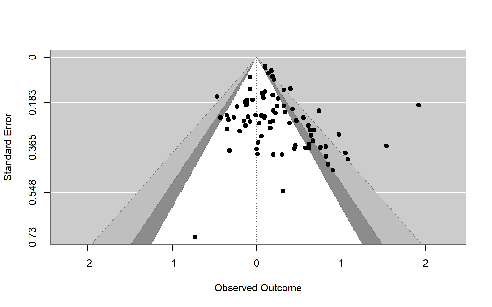

The research reported here was supported, in whole or in part, by the Institute of Education Sciences, U.S. Department of Education, through grant R305D220026 to the American Institutes for Research. The opinions expressed are those of the authors and do not represent the views of the Institute or the U.S. Department of Education.
Selective reporting of study results is a big concern for meta-analysts. By selective reporting, we mean the phenomenon where affirmative findings—that is, statistically significant findings in the theoretically expected direction—are more likely to be reported and more likely to be available for a systematic review compared to non-affirmative findings. Selective reporting arises due to biases in the publication process, on the part of journals, editors, and reviewers, as well as strategic decisions on part of the authors (Rothstein et al., 2006; Sutton, 2009). Research synthesists worry about selective reporting because it can distort the evidence base available for meta-analysis, almost like a fun-house mirror distorts your appearance, leading to inflation of average effect size estimates and biased estimates of heterogeneity.
If you read the meta-analysis methods literature, you will find scores of tools available to investigate and adjust for the biases created by selective reporting. Well known and widely used methods include:
- graphical representations like funnel plots and contour-enhanced funnel plots (Sterne et al., 2011; Sterne & Egger, 2001);
- tests for selective reporting (or at least funnel plot asymmetry) like Egger’s regression (Egger et al., 1997) or Begg and Mazumdar’s rank correlation test (Begg & Mazumdar, 1994);
- bias-adjustment methods like PET-PEESE (Stanley, 2008; Stanley & Doucouliagos, 2014), Trim-and-Fill (Duval & Tweedie, 2000), and selection models (Hedges & Vevea, 2005);
- p-value diagnostics like p-curve (Simonsohn et al., 2014), p-uniform (Aert et al., 2016; Assen et al., 2015), and the test of excess significance (Ioannidis & Trikalinos, 2007); and
- sensitivity analyses based on various forms of selection models (Copas & Shi, 2001; Mathur & VanderWeele, 2020; Vevea & Woods, 2005).
However, nearly all of the statistical methods here have the limitation that they are premised on observing independent effect sizes. That presents a problem for meta-analyses in education, psychology, and other social science fields, where it is very common to have meta-analyses involving dependent effect sizes.
Dependent effects occur in meta-analyses of group comparisons when primary studies report effects for multiple correlated measures of an outcome, at multiple points in time, or for multiple treatment groups compared to the same control group (Becker, 2000). Dependent effects are also common in meta-analyses of correlational effect sizes, where primary studies report more than one relevant correlation coefficient based on the same sample of participants. Methods such as multi-level meta-analysis (Van den Noortgate et al., 2013) and robust variance estimation (Hedges et al., 2010) are available to accommodate dependent effects when summarizing findings across studies or investigating moderators of effect size using meta-regression, but these techniques have yet to be extended to methods for testing or correcting bias due to selective reporting. Consequently, it’s pretty common to see research synthesis papers that use very sophisticated models for part of the analysis, but then use kludgey, awkward, or hacky approaches when it comes time to investigating selective reporting (Rodgers & Pustejovsky, 2020).
Along with a group of our colleagues from the American Institutes for Research, we are currently working on a project to develop better methods for investigating selective reporting issues in meta-analyses of dependent effect sizes. In this post, we will share an early peek under the hood at one little piece of what we’re studying, by sketching out what we think is a promising and pragmatic method for examining selective reporting while also accounting for effect size dependency. The method is to use a cluster-level bootstrap, which involves re-sampling clusters of observations (i.e., the set of multiple effect size estimates reported within a given primary study) to approximate the sampling distribution of an estimator (Boos, 2003; Cameron et al., 2008). To illustrate this technique, we will demonstrate how to bootstrap a Vevea-Hedges selection model.
Selection models comprise a large class of models that have two parts: a model describing the evidence-generation process and a model describing the process by which evidence is reported (Hedges & Vevea, 2005). Vevea-Hedges selection models (Hedges, 1992; Hedges & Vevea, 1996; Vevea & Hedges, 1995) involve a random effects meta-regression model for the evidence-generation process and a step function for the reporting process. With a step function, we assume that the probability that an effect size estimate is observed depends on the range in which its p-value falls. For instance, effects with \(.01 < p \leq .05\) might have some probability \(\lambda_1\) of being reported, effects with \(.05 < p \leq .10\) might have some other probability \(\lambda_2\), and effects with \(.10 < p\) might have some other probability \(\lambda_3\).1 Because the Vevea-Hedges model and other selection models separate the data-generation process into these two distinct stages, their parameters have clear interpretations and they can be used to generate bias-adjusted estimates of the distribution of effect sizes and to test for selective reporting issues. The only problem is that available implementations of selection models do not account for effect size dependency—but that’s where cluster bootstrapping could potentially help.
Disclaimer
To be clear, this post is based on work in progress. The cluster-bootstrap selection model that we’re going to demonstrate is an experimental and exploratory technique. We’re currently studying its properties and performance using Monte Carlo simulations, but we don’t have formal results to share yet. In the spirit of open and collaborative science, we wrote this post to demonstrate our approach to coding the method, in case others would like to experiment with the technique. Given that there are so few methods available for investigating selective reporting in meta-analyses with dependent effect sizes, we think this method is worth playing with and investigating further, and we would be happy to have others try it out as well. But, if you do so, please treat the results as tentative until we learn more about when the methods work well enough to trust the results.
An Example
For demonstrating this method, we will use data from a recent meta-analysis by Lehmann and colleagues (2018) that examined the effects of the color red on attractiveness judgments. The data is available via the metadat package (White et al., 2022). The dataset includes 81 effect sizes from 41 unique studies. You can browse the data for yourself here:
Code
library(metadat) # for the example dataset
library(tidyverse) # for tidying
library(janitor) # for tidying variable names
library(metafor) # for meta-analysis
library(boot) # for bootstrapping
library(tictoc) # for keeping time
lehmann_dat <-
dat.lehmann2018 %>%
clean_names() %>%
mutate(study = str_split_fixed(short_title, pattern = "-", n = 2)[, 1]) %>%
arrange(study) %>%
select(study, presentation = stimuli_presentation, yi, vi, everything())| study | presentation | yi | vi | short_title | full_citation | year | pr_publication | source_type | preregistered | moderator_group | context | gender | color_contrast | color_form | photo_type | photo_similarity | dv_type | dv_items | dv_scale | dv_scale_bottom | dv_scale_top | location | continent | participants | participant_notes | design | eth_majority | eth_majority_detail | eth_stim | eth_match | red_age | control_age | color_red | color_control | red_original | color_match | presentation_control | red_n | red_m | red_sd | control_n | control_m | control_sd | sd_diff | rm_r | control_attractiveness | notes | total_sample_size | pooled |
|---|---|---|---|---|---|---|---|---|---|---|---|---|---|---|---|---|---|---|---|---|---|---|---|---|---|---|---|---|---|---|---|---|---|---|---|---|---|---|---|---|---|---|---|---|---|---|---|---|---|
| Banas, 2014 | Paper | 0.06 | 0.10 | Banas, 2014 - Exp 1 | Banas, K. (2014, July 7). Replication of Elliot et al. (2010) for CREP at the University of Edinburgh. Retrieved from osf.io/cvdpw | 2014.0 | No | CREP | Pre-Registered | No | Romantic | Females | Gray | Background | Bust | Same between conditions | Perceived attractiveness | 3 | 1-9 | 1 | 9 | Scotland | Europe | Students | Undergrads | Between Subjects | White | White | Latino | Mis-match | 20.43 | 20.95 | LCh(50.0, 59.6, 31.3) | LCh(50.0, -, 69.1) | Yes | Yes | Yes | 20 | 6.05 | 1.59 | 19 | 5.96 | 1.49 | NA | NA | 0.62 | NA | 39 | NA |
| Berthold, 2013 | Screen | 0.55 | 0.06 | Berthold, 2013 - Exp 1 - In Group | Berthold, A. (2013). Unpublished data | 2013.0 | No | Unpublished/Online | Not Pre-Registered | No | Romantic | Females | Blue | Background | Bust | Same between conditions | Perceived attractiveness | 4 | 1-7 | 1 | 7 | Germany | Europe | Students | Undergrads | Between Subjects | White | White | White | Matched | 25.00 | 25.00 | No Data | No Data | No | No | Yes | 36 | 2.31 | 1.29 | 33 | 1.73 | 0.65 | NA | NA | 0.12 | NA | 69 | NA |
| Bigelow et al., 2013 | Screen | 0.31 | 0.30 | Bigelow et al., 2013 - Exp 1 | Bigelow, M.G., Taylor, G. & Underwood, M. (2013). Context-moderated effect of color on physiological and self-report measures of emotional response. UNC Asheville Journal, Undergraduate Research Program, Asheville, NC | 2013.0 | Yes | Journal | Not Pre-Registered | No | Romantic | Females | Blue | Background | Head Shot | Same between conditions | Single item | 1 | 1-9 | 1 | 9 | USA | North America | Students | Undergrads | Between Subjects | NA | NA | NA | NA | NA | NA | Lab(37.43/59.24/47.63) | Lab(36.68/34.86/87.99) | No | No | Yes | 6 | 5.22 | 1.77 | 8 | 4.56 | 2.09 | NA | NA | 0.44 | NA | 14 | NA |
| Bigelow et al., 2013 | Screen | -0.73 | 0.53 | Bigelow et al., 2013 - Exp 1 | Bigelow, M.G., Taylor, G. & Underwood, M. (2013). Context-moderated effect of color on physiological and self-report measures of emotional response. UNC Asheville Journal, Undergraduate Research Program, Asheville, NC | 2013.0 | Yes | Journal | Not Pre-Registered | No | Romantic | Males | Blue | Background | Head Shot | Same between conditions | Single item | 1 | 1-9 | 1 | 9 | USA | North America | Students | Undergrads | Between Subjects | NA | NA | NA | NA | NA | NA | Lab(37.43/59.24/47.63) | Lab(36.68/34.86/87.99) | No | No | Yes | 4 | 4.65 | 2.05 | 4 | 6.28 | 1.81 | NA | NA | 0.66 | NA | 8 | NA |
| Blech, 2014 | Screen | 0.08 | 0.03 | Blech, 2014 - Exp 1 | Blech, C. (2014, August 4). Replication of Elliot et al. (2010). Red, rank, and romance in women viewing men. Retrieved from osf.io/tx2u5 | 2014.0 | No | Unpublished/Online | Not Pre-Registered | No | Romantic | Females | White | Background | Head Shot | Same between conditions | Perceived attractiveness, German translation | 4 | 1-9 | 1 | 9 | Germany | Europe | Students | Undergrads | Between Subjects | White | White | Latino | Mis-match | NA | NA | No Data | No Data | No | No | No | 71 | 5.36 | 1.43 | 78 | 5.25 | 1.48 | NA | NA | 0.53 | Not part of CREP because Used white as control condition, dropped yellow as not an original control color, age not included because separated into categories (<25, 26-40, >=41) | 149 | NA |
| Blech, 2015 | Screen | -0.35 | 0.05 | Blech, 2015 - Class Exp | Blech, C. (2015). Unpublished data from a class experiment | 2015.0 | No | Unpublished/Online | Not Pre-Registered | No | Romantic | Females | White | Clothing | Bust | Same between conditions | Perceived attractiveness | 4 | 1-9 | 1 | 9 | Germany | Europe | Adults | NA | Between Subjects | White | White | White | Matched | 31.40 | 31.40 | NA | NA | No | No | No | 37 | 3.95 | 1.29 | 37 | 4.45 | 1.50 | NA | NA | 0.43 | NA | 74 | NA |
| Boelk & Madden, 2014 | Paper | -0.27 | 0.06 | Boelk & Madden, 2014 - Exp 1 | Boelk, K., & Madden, W. (2014, August 5). Fork of Elliot, A. J., Niesta Kayser, D., Greitemeyer, T., Lichtenfeld, S., Gramzow, R. H., Maier, M. A., & Liu, H. (2010). Retrieved from osf.io/zf7c9 | 2014.0 | No | CREP | Pre-Registered | No | Romantic | Females | Gray | Background | Bust | Same between conditions | Perceived attractiveness | 3 | 1-9 | 1 | 9 | USA | North America | Students | Undergrads | Between Subjects | White | White | Latino | Mis-match | 19.06 | 19.35 | LCh(50.0, 59.6, 31.3) | LCh(50.0, -, 69.1) | Yes | Yes | Yes | 34 | 6.03 | 1.24 | 34 | 6.40 | 1.49 | NA | NA | 0.68 | NA | 68 | NA |
| Buechner et al., 2015 | Paper | 0.68 | 0.09 | Buechner et al., 2015 - Exp 1 - Prideful Pose | Buechner, V. L., Maier, M. A., Lichtenfeld, S., & Elliot, A. J. (2015). Emotion Expression and Color: Their Joint Influence on Perceived Attractiveness and Social Position. Current Psychology, 34(2), 422-433. http://doi.org/10.1007/s12144-014-9266-x | 2015.0 | Yes | Journal | Not Pre-Registered | No | Romantic | Females | Blue | Dot | Bust | Same between conditions | Perceived attractiveness | 3 | 1-9 | 1 | 9 | Germany | Europe | Students | High School | Between Subjects | White | White | White | Matched | 16.88 | 16.88 | LCh(50.9, 59.7, 25.7) | LCh(49.2, 60.2, 278.2) | Yes | Yes | Yes | 21 | 4.30 | 1.65 | 29 | 3.21 | 1.53 | NA | NA | 0.28 | NA | 50 | NA |
| Costello et al., 2017 | Paper | -0.12 | 0.03 | Costello et al., 2017 - Exp 1 | Costello J., Groeneboom L. & Pollet T. (2017). Romantic red: Do red products enhance the attractiveness of the consumer? Unpublished masters degree manuscript, University of Leiden | 2017.0 | No | Unpublished/Online | Not Pre-Registered | No | Romantic | Males | Blue | Item | Bust | Same between conditions | Single item perceived attractiveness | 1 | 1-5 | 1 | 5 | Netherlands | Europe | Students | Undergrad | Between Subjects | White | White | Asian | Mis-match | 22.60 | NA | NA | NA | No | No | Yes | 65 | 2.25 | 1.04 | 64 | 2.38 | 0.95 | NA | NA | 0.34 | NA | 129 | NA |
| Costello et al., 2017 | Paper | 0.08 | 0.02 | Costello et al., 2017 - Exp 2 | Costello J., Groeneboom L. & Pollet T. (2017). Romantic red: Do red products enhance the attractiveness of the consumer? Unpublished masters degree manuscript, University of Leiden | 2017.0 | No | Unpublished/Online | Not Pre-Registered | No | Romantic | Females | Blue/Green | Item | Head Shot | Same between conditions | Single item perceived attractiveness | 1 | 1-5 | 1 | 5 | Netherlands | Europe | Students | Undergrad | Between Subjects | White | White | White | Matched | 21.32 | 21.06 | No Data | No Data | No | No | Yes | 67 | 2.60 | 1.37 | 140 | 2.49 | 1.38 | NA | NA | 0.37 | Same filters applied as in Exp 1 (excluded homosexual and preferred not to answer). Control combines blue and green | 207 | NA |
| Elliot & Maier, 2013 | Paper | 0.25 | 0.03 | Elliot & Maier, 2013 - Exp 1 | Elliot, A. J., & Maier, M. a. (2013). The red-attractiveness effect, applying the Ioannidis and Trikalinos (2007b) test, and the broader scientific context: a reply to Francis (2013). Journal of Experimental Psychology. General, 142(1), 297-300. http://doi.org/10.1037/a0029592 | 2013.0 | Yes | Journal | Not Pre-Registered | No | Romantic | Females | Gray | Background | Bust | Same between conditions | Perceived attractiveness | 3 | 1-9 | 1 | 9 | USA | North America | Students | Undergrads | Between Subjects | White | White | Latino | Mis-match | 19.47 | 19.47 | LCh(42.6, 45.2, 15.8) | LCh(43.0, -, 296.7) | No | Yes | Yes | 75 | 6.29 | 1.35 | 69 | 5.93 | 1.49 | NA | NA | 0.62 | NA | 144 | NA |
| Elliot & Niesta, 2008 | Paper | 0.62 | 0.14 | Elliot & Niesta, 2008 - Exp 4 | Elliot, A. J., & Niesta, D. (2008). Romantic red: red enhances men's attraction to women. Journal of Personality and Social Psychology, 95(5), 1150-1164. http://doi.org/10.1037/0022-3514.95.5.1150 | 2008.0 | Yes | Journal | Not Pre-Registered | No | Romantic | Males | Green | Background | Bust | Same between conditions | Perceived attractiveness | 2 | 1-9 | 1 | 9 | USA | North America | Students | Undergrads | Between Subjects | White | White | White | Matched | 19.97 | 19.97 | LCh(46.1, 51.2, 29.3) | LCh(46.1, 51.0, 147.6) | Yes | Yes | Yes | 16 | 6.29 | 0.89 | 15 | 5.66 | 1.09 | NA | NA | 0.58 | NA | 31 | NA |
| Elliot & Niesta, 2008 | Paper | 0.67 | 0.11 | Elliot & Niesta, 2008 - Exp 3 | Elliot, A. J., & Niesta, D. (2008). Romantic red: red enhances men's attraction to women. Journal of Personality and Social Psychology, 95(5), 1150-1164. http://doi.org/10.1037/0022-3514.95.5.1150 | 2008.0 | Yes | Journal | Not Pre-Registered | No | Romantic | Males | Gray | Background | Bust | Same between conditions | Perceived attractiveness | 2 | 1-9 | 1 | 9 | USA | North America | Students | Undergrads | Between Subjects | White | White | White | Matched | 20.00 | 20.00 | LCh(50.0, 58.7, 30.3) | LCh(50.0, -, 52.6) | Yes | Yes | Yes | 20 | 6.65 | 1.10 | 17 | 5.91 | 1.07 | NA | NA | 0.61 | NA | 37 | NA |
| Elliot & Niesta, 2008 | Paper | 0.84 | 0.19 | Elliot & Niesta, 2008 - Exp 5 | Elliot, A. J., & Niesta, D. (2008). Romantic red: red enhances men's attraction to women. Journal of Personality and Social Psychology, 95(5), 1150-1164. http://doi.org/10.1037/0022-3514.95.5.1150 | 2008.0 | Yes | Journal | Not Pre-Registered | No | Romantic | Males | Blue | Clothing | Bust | Same between conditions | Perceived attractiveness | 2 | 1-9 | 1 | 9 | USA | North America | Students | Undergrads | Between Subjects | White | White | White | Matched | 19.77 | 19.77 | LCh(45.9, 54.8, 32.5) | LCh(46.0, 54.9, 283.0) | Yes | Yes | Yes | 12 | 7.21 | 1.05 | 11 | 6.09 | 1.49 | NA | NA | 0.64 | NA | 23 | NA |
| Elliot & Niesta, 2008 | Paper | 0.75 | 0.13 | Elliot & Niesta, 2008 - Exp 2 | Elliot, A. J., & Niesta, D. (2008). Romantic red: red enhances men's attraction to women. Journal of Personality and Social Psychology, 95(5), 1150-1164. http://doi.org/10.1037/0022-3514.95.5.1150 | 2008.0 | Yes | Journal | Not Pre-Registered | No | Romantic | Males | White | Background | Bust | Same between conditions | Perceived attractiveness | 2 | 1-9 | 1 | 9 | USA | North America | Students | Undergrads | Between Subjects | White | White | White | Matched | 19.27 | 19.27 | LCh(55.5, 78.0, 28.0) | No Data | Yes | No | Yes | 16 | 7.07 | 0.78 | 16 | 6.13 | 1.53 | NA | NA | 0.64 | Age includes both male and female participants. | 32 | NA |
| Elliot & Niesta, 2008 | Paper | 1.08 | 0.17 | Elliot & Niesta, 2008 - Exp 1 | Elliot, A. J., & Niesta, D. (2008). Romantic red: red enhances men's attraction to women. Journal of Personality and Social Psychology, 95(5), 1150-1164. http://doi.org/10.1037/0022-3514.95.5.1150 | 2008.0 | Yes | Journal | Not Pre-Registered | No | Romantic | Males | White | Background | Bust | Same between conditions | Perceived attractiveness | 2 | 1-9 | 1 | 9 | USA | North America | Students | Undergrads | Between Subjects | White | White | White | Matched | 20.52 | 20.52 | LCh(50.3, 58.8, 29.9) | No Data | Yes | No | Yes | 15 | 7.33 | 0.90 | 12 | 6.25 | 1.05 | NA | NA | 0.66 | NA | 27 | NA |
| Elliot et al., 2010 | Paper | 0.82 | 0.13 | Elliot et al., 2010 - Exp 3 | Elliot, A. J., Niesta Kayser, D., Greitemeyer, T., Lichtenfeld, S., Gramzow, R. H., Maier, M. A., & Liu, H. (2010). Red, rank, and romance in women viewing men. Journal of Experimental Psychology: General, 139(3), 399-417. http://doi.org/10.1037/a0019689 | 2010.0 | Yes | Journal | Not Pre-Registered | No | Romantic | Females | Gray | Background | Bust | Same between conditions | Perceived attractiveness | 3 | 1-9 | 1 | 9 | USA | North America | Students | Undergrads | Between Subjects | White | White | Latino | Mis-match | 19.64 | 19.64 | LCh(50.0, 59.6, 31.3) | LCh(50.0, -, 69.1) | Yes | Yes | Yes | 16 | 6.69 | 1.22 | 17 | 5.27 | 2.04 | NA | NA | 0.53 | df doesn't match sample size | 33 | NA |
| Elliot et al., 2010 | Paper | 0.61 | 0.08 | Elliot et al., 2010 - Exp 4 | Elliot, A. J., Niesta Kayser, D., Greitemeyer, T., Lichtenfeld, S., Gramzow, R. H., Maier, M. A., & Liu, H. (2010). Red, rank, and romance in women viewing men. Journal of Experimental Psychology: General, 139(3), 399-417. http://doi.org/10.1037/a0019689 | 2010.0 | Yes | Journal | Not Pre-Registered | No | Romantic | Females | Green | Clothing | Bust | Same between conditions | Mehrabian & Blum's Perceived attractiveness | 4 | 1-9 | 1 | 9 | China | Asia | Students | Undergrads | Between Subjects | Chinese | Chinese | Chinese | Matched | 20.60 | 20.60 | LCh(51.3, 51.7, 30.1) | LCh(51.5, 51.6, 136.6) | Yes | Yes | Yes | 27 | 6.32 | 1.09 | 28 | 5.50 | 1.50 | NA | NA | 0.56 | NA | 55 | NA |
| Elliot et al., 2010 | Paper | 0.90 | 0.21 | Elliot et al., 2010 - Exp 1 | Elliot, A. J., Niesta Kayser, D., Greitemeyer, T., Lichtenfeld, S., Gramzow, R. H., Maier, M. A., & Liu, H. (2010). Red, rank, and romance in women viewing men. Journal of Experimental Psychology: General, 139(3), 399-417. http://doi.org/10.1037/a0019689 | 2010.0 | Yes | Journal | Not Pre-Registered | No | Romantic | Females | White | Background | Bust | Same between conditions | Perceived attractiveness | 3 | 1-9 | 1 | 9 | USA | North America | Students | Undergrads | Between Subjects | White | White | White | Matched | 20.19 | 20.19 | LCh(49.6, 58.8, 30.4) | No Data | Yes | No | Yes | 10 | 6.79 | 1.00 | 11 | 5.67 | 1.34 | NA | NA | 0.58 | df doesn't match sample size | 21 | NA |
| Elliot et al., 2010 | Paper | 0.82 | 0.16 | Elliot et al., 2010 - Exp 7 | Elliot, A. J., Niesta Kayser, D., Greitemeyer, T., Lichtenfeld, S., Gramzow, R. H., Maier, M. A., & Liu, H. (2010). Red, rank, and romance in women viewing men. Journal of Experimental Psychology: General, 139(3), 399-417. http://doi.org/10.1037/a0019689 | 2010.0 | Yes | Journal | Not Pre-Registered | No | Romantic | Females | Blue | Clothing | Bust | Same between conditions | Maner et al perceived attractiveness | 1 | 1-9 | 1 | 9 | England | Europe | Students | Undergrads | Between Subjects | White | White | White | Matched | 19.44 | 19.44 | LCh(54.8, 43.2, 30.3) | LCh(55.1, 43.7, 283.0) | Yes | Yes | Yes | 12 | 7.50 | 1.17 | 15 | 6.13 | 1.89 | NA | NA | 0.64 | NA | 27 | NA |
| Elliot et al., 2010 | Paper | 1.05 | 0.15 | Elliot et al., 2010 - Exp 2 | Elliot, A. J., Niesta Kayser, D., Greitemeyer, T., Lichtenfeld, S., Gramzow, R. H., Maier, M. A., & Liu, H. (2010). Red, rank, and romance in women viewing men. Journal of Experimental Psychology: General, 139(3), 399-417. http://doi.org/10.1037/a0019689 | 2010.0 | Yes | Journal | Not Pre-Registered | No | Romantic | Females | White | Background | Bust | Same between conditions | Perceived attractiveness | 3 | 1-9 | 1 | 9 | USA | North America | Students | Undergrads | Between Subjects | White | White | White | Matched | 20.46 | 20.46 | LCh(49.6, 58.8, 30.4) | No Data | Yes | No | Yes | 20 | 7.15 | 0.74 | 12 | 6.20 | 1.08 | NA | NA | 0.65 | Sample size taken from Francis, t(df) seems to be using ANOVA df for post-hoc, age data for both male and female participants (separate was not provided) | 32 | NA |
| Elliot et al., 2013 | Paper | 0.64 | 0.10 | Elliot et al., 2013 - Exp 1 | Elliot, A. J., Tracy, J. L., Pazda, A. D., & Beall, A. T. (2013). Red enhances women's attractiveness to men: First evidence suggesting universality. Journal of Experimental Social Psychology, 49(1), 165-168. http://doi.org/10.1016/j.jesp.2012.07.017 | 2013.0 | Yes | Journal | Not Pre-Registered | No | Romantic | Males | Blue | Background | Head Shot | Same between conditions | Perceived attractiveness | 3 | 1-5 | 1 | 5 | Burkina Faso | Africa | Adults | NA | Between Subjects | Black | Black | Black | Matched | 26.80 | 26.80 | LCh(42.7, 51.5, 20.4) | LCh(43.4, 51.5, 269.8) | No | Yes | Yes | 21 | 4.62 | 0.59 | 21 | 4.14 | 0.85 | NA | NA | 0.78 | NA | 42 | NA |
| Frazier, 2014 | Paper | 0.09 | 0.06 | Frazier, 2014 - Exp 1 | Frazier, A. (2014, November 13). Fork of Elliot, A. J., Niesta Kayser, D., Greitemeyer, T., Lichtenfeld, S., Gramzow, R. H., Maier, M. A., & Liu, H. (2010). Retrieved from osf.io/u0mig | 2014.0 | No | CREP | Pre-Registered | No | Romantic | Females | Gray | Background | Bust | Same between conditions | Perceived attractiveness | 3 | 1-9 | 1 | 9 | USA | North America | Students | Undergrads | Between Subjects | White | White | Latino | Mis-match | 18.90 | 18.90 | LCh(50.0, 59.6, 31.3) | LCh(50.0, -, 69.1) | Yes | Yes | Yes | 29 | 6.09 | 1.39 | 39 | 5.97 | 1.26 | NA | NA | 0.62 | NA | 68 | NA |
| Gilston & Privitera, 2016 | Screen | 1.92 | 0.04 | Gilston & Privitera, 2016 - Exp 1 - Healthy | Gilston, A., & Privitera, G. J. (2015). A 'Healthy' Color: Information About Healthy Eating Attenuates the 'Red Effect.' Global Journal of Health Science, 8(1), 56-61. https://doi.org/10.5539/gjhs.v8n1p56 | 2016.0 | Yes | Journal | Not Pre-Registered | No | Romantic | Males | White | Clothing | Head Shot | Same between conditions | Perceived attractiveness | 1 | 1-7 | 1 | 7 | USA | North America | Students | Undergrad | Within Subjects | NA | NA | White | NA | 19.85 | 19.85 | No Data | No Data | No | No | Yes | 54 | 5.65 | 1.51 | 54 | 3.09 | 1.09 | NA | 0.89 | 0.35 | NA | 54 | 1.32 |
| Gueguen, 2012 | Paper | 0.74 | 0.05 | Gueguen, 2012 - Exp 1 | Gueguen, N. (2012). Color and Women Attractiveness: When Red Clothed Women Are Perceived to Have More Intense Sexual Intent. The Journal of Social Psychology, 152(3), 261-265. http://doi.org/10.1080/00224545.2011.605398 | 2012.0 | Yes | Journal | Not Pre-Registered | No | Romantic | Males | Blue/Green/White | Clothing | Bust | Same between conditions | Perceived attractiveness | 1 | 1-9 | 1 | 9 | France | Europe | Students | Undergrads | Between Subjects | NA | NA | NA | NA | 19.20 | 19.20 | No Data | No Data | No | No | Yes | 30 | 5.95 | 1.24 | 90 | 5.04 | 1.22 | NA | NA | 0.50 | Control is average of blue, white, and green | 120 | NA |
| Hesslinger et al. 2015 | Paper | 0.46 | 0.13 | Hesslinger et al. 2015 - Exp 2 | Hesslinger, V. M., Goldbach, L., Carbon, C.-C., Allgemeine, A., Psychologie, E., & Note, A. (2015). Men in red: A reexamination of the red-attractiveness effect. Psychonomic Bulletin & Review, 55(4), 1-6. http://doi.org/10.3758/s13423-015-0866-8 | 2015.0 | Yes | Journal | Not Pre-Registered | No | Romantic | Females | White | Background | Full Body | Same between conditions | Perceived attractiveness, German translation | 3 | 1-9 | 1 | 9 | Germany | Europe | Students | Undergrads | Between Subjects | White | White | White | Matched | 20.20 | 20.20 | CIE-Lab(50, 51, 30) | No Data | Yes | No | Yes | 16 | 4.98 | 0.70 | 16 | 4.63 | 0.79 | NA | NA | 0.45 | Age includes both male and female participants. | 32 | NA |
| Hesslinger et al. 2015 | Paper | 0.06 | 0.06 | Hesslinger et al. 2015 - Exp 1 | Hesslinger, V. M., Goldbach, L., Carbon, C.-C., Allgemeine, A., Psychologie, E., & Note, A. (2015). Men in red: A reexamination of the red-attractiveness effect. Psychonomic Bulletin & Review, 55(4), 1-6. http://doi.org/10.3758/s13423-015-0866-8 | 2015.0 | Yes | Journal | Not Pre-Registered | No | Romantic | Females | White | Background | Bust | Same between conditions | Perceived attractiveness, German translation | 3 | 1-9 | 1 | 9 | Germany | Europe | Students | Undergrads | Between Subjects | White | White | White | Matched | 21.20 | 22.60 | CIE-Lab(50, 51, 30) | No Data | Yes | No | Yes | 35 | 5.71 | 1.65 | 37 | 5.62 | 1.44 | NA | NA | 0.58 | Age includes both male and female participants. | 72 | NA |
| Johnson et al., 2015 | Paper | -0.01 | 0.05 | Johnson et al., 2015 - Exp 1 | Johnson, K., Meltzer, A., & Grahe, J. E. (2015, October 12). Fork of Elliot, A. J., Niesta Kayser, D., Greitemeyer, T., Lichtenfeld, S., Gramzow, R. H., Maier, M. A., & Liu, H. (2010). Retrieved from osf.io/ictud | 2014.0 | No | CREP | Pre-Registered | No | Romantic | Females | Gray | Background | Bust | Same between conditions | Perceived attractiveness | 3 | 1-9 | 1 | 9 | USA | North America | Students | Undergrads | Between Subjects | White | White | Latino | Mis-match | 18.94 | 18.92 | LCh(50.0, 59.6, 31.3) | LCh(50.0, -, 69.1) | Yes | Yes | Yes | 35 | 5.97 | 1.60 | 38 | 5.99 | 1.34 | NA | NA | 0.62 | Yellow group also run, but not included | 73 | NA |
| Khislavsky, 2016 | Paper | 0.06 | 0.02 | Khislavsky, 2016 - Exp 1 | Khislavsky, A. (2016, March 14). Replication of Elliot et al. (2010). Red, rank, and romance in women viewing men. Retrieved from osf.io/f2udj | 2015.0 | No | Unpublished/Online | Not Pre-Registered | No | Romantic | Females | Gray | Background | Bust | Same between conditions | Perceived attractiveness | 3 | 1-9 | 1 | 9 | USA | North America | Students | Undergrads | Between Subjects | Latino | Latino | Latino | Matched | 19.91 | 20.04 | ~LCh(50.0, 59.6, 31.3) | ~LCh(50.0, -, 69.1) | Yes | Yes | Yes | 95 | 5.73 | 1.76 | 92 | 5.61 | 1.84 | NA | NA | 0.58 | Not reviewed by CREP | 187 | NA |
| Kirsch, 2015 | Screen | -0.47 | 0.03 | Kirsch, 2015 - Exp 1 - Heterosexual | Kirsch, F. (2015). Wahrgenommene Attraktivitaet und sexuelle Orientierung: Die Wirkung von Rot und Farbpraeferenzen (Perceived attractiveness and sexual orientation: The effects of red and color preferences). Wiesbaden: Springer. doi: 10.1007/978-3-658-08405-9 | 2015.0 | No | Unpublished/Online | Not Pre-Registered | No | Romantic | Females | White | Clothing | Bust | Same between conditions | Perceived attractiveness | 2 | 1-9 | 1 | 9 | Germany | Europe | Online | NA | Between Subjects | NA | NA | White | NA | 22.45 | 22.45 | No Data | No Data | No | No | No | 76 | 5.33 | 1.83 | 85 | 6.13 | 1.54 | NA | NA | 0.64 | Cross-gender rating (females rating males). Age includes participants in all conditions. | 161 | NA |
| Kirsch, 2015 | Screen | 0.32 | 0.04 | Kirsch, 2015 - Exp 1 - Heterosexual | Kirsch, F. (2015). Wahrgenommene Attraktivitaet und sexuelle Orientierung: Die Wirkung von Rot und Farbpraeferenzen (Perceived attractiveness and sexual orientation: The effects of red and color preferences). Wiesbaden: Springer. doi: 10.1007/978-3-658-08405-9 | 2015.0 | No | Monograph | Not Pre-Registered | No | Romantic | Males | White | Clothing | Bust | Same between conditions | Perceived attractiveness | 2 | 1-9 | 1 | 9 | Germany | Europe | Online | NA | Between Subjects | NA | NA | White | NA | 22.45 | 22.45 | No Data | No Data | No | No | No | 57 | 6.85 | 1.44 | 48 | 6.42 | 1.22 | NA | NA | 0.68 | Cross-gender rating (males rating females). Age includes participants in all conditions. | 105 | NA |
| Kirsch, 2015 | NA | 0.03 | 0.07 | Kirsch, 2015 - Exp 2 | Kirsch, F. (2015). Wahrgenommene Attraktivitaet und sexuelle Orientierung: Die Wirkung von Rot und Farbpraeferenzen (Perceived attractiveness and sexual orientation: The effects of red and color preferences). Wiesbaden: Springer. doi: 10.1007/978-3-658-08405-9 | 2015.0 | No | Monograph | Not Pre-Registered | No | Romantic | Males | White | Clothing | Bust | Same between conditions | Perceived attractiveness | 2 | 1-9 | 1 | 9 | Germany | Europe | Students | Undergrads | Between Subjects | NA | NA | NA | NA | NA | NA | No Data | No Data | No | No | No | 28 | 6.55 | 1.17 | 28 | 6.52 | 1.36 | NA | NA | 0.69 | Means are only for cross-gender rating (males rating females) | 56 | NA |
| Legate et al., 2015 | Paper | -0.35 | 0.08 | Legate et al., 2015 - Exp 1 | Legate, N., Baciu, C., Horne, L. M., Fiol, S., Paniagua, D., Muqeet, M., & Zachocki, E. (2015, June 27). Replication of Elliot et al. (2010) at IIT. Retrieved from osf.io/zih7c | 2015.0 | No | CREP | Pre-Registered | No | Romantic | Females | Gray | Background | Bust | Same between conditions | Perceived attractiveness | 3 | 1-9 | 1 | 9 | USA | North America | Students | Undergrads | Between Subjects | White | White (21 white, 16 asian) | Latino | Mis-match | 20.73 | 20.25 | ~LCh(50.0, 59.6, 31.3) | ~LCh(50.0, -, 69.1) | Yes | Yes | Yes | 25 | 5.76 | 1.61 | 23 | 6.33 | 1.58 | NA | NA | 0.67 | NA | 48 | NA |
| Lehmann & Calin | Screen | 0.39 | 0.07 | Lehmann & Calin-Jageman, 2015 - Class Exp | Lehmann & Calin-Jageman (2017) Is red really romantic? Direct replications suggest little to no effect of the color red on perceived attractiveness for men and women. Social Psychology. | 2015.0 | No | Unpublished/Online | Not Pre-Registered | No | Romantic | Females | White | Background | Bust | Same between conditions | Perceived attractiveness | 2 | 1-9 | 1 | 9 | USA | North America | Online | Mturk | Between Subjects | White | White | White | Matched | 31.70 | 36.15 | No Data | No Data | No | No | No | 29 | 4.34 | 1.63 | 28 | 3.69 | 1.65 | NA | NA | 0.34 | NA | 57 | NA |
| Lehmann & Calin | Paper | -0.11 | 0.03 | Lehmann & Calin-Jageman, 2017 - Exp 1 | Lehmann & Calin-Jageman (2017) Is red really romantic? Direct replications suggest little to no effect of the color red on perceived attractiveness for men and women. Social Psychology. | 2017.0 | Yes | Journal | Pre-Registered | No | Romantic | Females | White | Background | Bust | Same between conditions | Perceived attractiveness | 2 | 1-9 | 1 | 9 | USA | North America | Students | Undergrads | Between Subjects | Latino | Mixed | White/Latino | Matched | 20.41 | 21.22 | LCh(51.3, 58.2, 29.5) | No Data | Yes | No | Yes | 56 | 4.67 | 2.05 | 60 | 4.89 | 1.80 | NA | NA | 0.49 | NA | 116 | NA |
| Lehmann & Calin | Screen | -0.08 | 0.02 | Lehmann & Calin-Jageman, 2017 - Exp 2 | Lehmann & Calin-Jageman (2017) Is red really romantic? Direct replications suggest little to no effect of the color red on perceived attractiveness for men and women. Social Psychology. | 2017.0 | Yes | Journal | Pre-Registered | No | Romantic | Females | Gray | Background | Bust | Same between conditions | Perceived attractiveness | 2 | 1-9 | 1 | 9 | USA | North America | Online | Mturk | Between Subjects | White | White | White/Latino | Matched | 36.05 | 38.32 | No Data | No Data | No | No | No | 114 | 5.24 | 1.58 | 130 | 5.38 | 1.85 | NA | NA | 0.55 | NA | 244 | NA |
| Lehmann & Calin | Screen | -0.23 | 0.04 | Lehmann & Calin-Jageman, 2015 - Class Exp | Lehmann & Calin-Jageman (2017) Is red really romantic? Direct replications suggest little to no effect of the color red on perceived attractiveness for men and women. Social Psychology. | 2015.0 | No | Unpublished/Online | Not Pre-Registered | No | Romantic | Males | White | Background | Bust | Same between conditions | Perceived attractiveness | 2 | 1-9 | 1 | 9 | USA | North America | Online | Mturk | Between Subjects | White | White | White | Matched | 33.15 | 33.88 | No Data | No Data | No | No | No | 56 | 5.24 | 1.59 | 46 | 5.59 | 1.34 | NA | NA | 0.57 | NA | 102 | NA |
| Lehmann & Calin | Screen | 0.10 | 0.02 | Lehmann & Calin-Jageman, 2017 - Exp 2 | Lehmann & Calin-Jageman (2017) Is red really romantic? Direct replications suggest little to no effect of the color red on perceived attractiveness for men and women. Social Psychology. | 2017.0 | Yes | Journal | Pre-Registered | No | Romantic | Males | Gray | Background | Bust | Same between conditions | Perceived attractiveness | 2 | 1-9 | 1 | 9 | USA | North America | Online | Mturk | Between Subjects | White | White | White | Matched | 35.78 | 35.85 | No Data | No Data | No | No | No | 104 | 6.51 | 1.32 | 106 | 6.38 | 1.32 | NA | NA | 0.67 | NA | 210 | NA |
| Lehmann & Calin | Paper | 0.00 | 0.14 | Lehmann & Calin-Jageman, 2017 - Exp 1 | Lehmann & Calin-Jageman (2017) Is red really romantic? Direct replications suggest little to no effect of the color red on perceived attractiveness for men and women. Social Psychology. | 2017.0 | Yes | Journal | Pre-Registered | No | Romantic | Males | White | Background | Bust | Same between conditions | Perceived attractiveness | 2 | 1-9 | 1 | 9 | USA | North America | Students | Undergrads | Between Subjects | Mixed | Mixed | White | Mis-match | 20.81 | 20.45 | LCh(51.3, 58.2, 29.5) | No Data | Yes | No | Yes | 21 | 6.52 | 1.16 | 11 | 6.52 | 1.56 | NA | NA | 0.69 | NA | 32 | NA |
| Lin, 2014 | Paper | 1.53 | 0.13 | Lin, 2014 - Exp 1 | Lin, H. (2014). Red-colored products enhance the attractiveness of women. Displays, 35(4), 202-205. http://doi.org/10.1016/j.displa.2014.05.009 | 2014.0 | Yes | Journal | Not Pre-Registered | No | Romantic | Males | Blue | Item | Bust | Same between conditions | Single item perceived attractiveness | 1 | 1-5 | 1 | 5 | Taiwan | Asia | Students | Undergrads | Between Subjects | Asian | NA | Asian | Matched | NA | NA | No Data | No Data | No | No | Yes | 20 | 3.50 | 0.69 | 20 | 2.55 | 0.51 | NA | NA | 0.39 | Control condition is blue; silver condition is dropped as it is not an original control color | 40 | NA |
| Maves & Nadler, 2016 | Paper | -0.12 | 0.03 | Maves & Nadler, 2016 - Exp 1 | Maves, M., & Nadler, J. T. (2016, June 2). Data and Analysis. Retrieved from osf.io/9bm8v | 2015.0 | No | CREP | Pre-Registered | No | Romantic | Females | Gray | Background | Bust | Same between conditions | Perceived attractiveness | 3 | 1-9 | 1 | 9 | USA | North America | Students | Undergrads | Between Subjects | White | White | Latino | Mis-match | 21.86 | 22.48 | ~LCh(50.0, 59.6, 31.3) | ~LCh(50.0, -, 69.1) | Yes | Yes | Yes | 66 | 6.07 | 1.40 | 64 | 6.23 | 1.38 | NA | NA | 0.65 | NA | 130 | NA |
| O'Mara & Trujillo, 2015 | Screen | 0.97 | 0.10 | O'Mara & Trujillo, 2015 - Exp 1 - Masculine Face | O'Mara, E. M., & Trujillo, A. (2015), unpublished data. | 2015.0 | No | Unpublished/Online | Not Pre-Registered | No | Romantic | Females | White | Background | Head Shot | Same between conditions | Perceived attractiveness | 1 | 1-9 | 1 | 9 | USA | North America | Students | Undergrads | Between Subjects | White | White | White | Matched | 19.10 | 19.10 | NA | NA | No | No | Yes | 21 | 6.11 | 1.30 | 25 | 4.78 | 1.38 | NA | NA | 0.47 | NA | 46 | NA |
| O'Mara & Trujillo, 2015 | Screen | -0.20 | 0.09 | O'Mara & Trujillo, 2015 - Exp 2 - Masculine Face | O'Mara, E. M., & Trujillo, A. (2015), unpublished data. | 2015.0 | No | Unpublished/Online | Not Pre-Registered | No | Romantic | Females | White | Background | Head Shot | Same between conditions | Perceived attractiveness | 1 | 1-9 | 1 | 9 | USA | North America | Online | Mturk | Between Subjects | White | White | White | Matched | 28.23 | 28.23 | NA | NA | No | No | No | 24 | 4.88 | 1.84 | 21 | 5.23 | 1.61 | NA | NA | 0.53 | NA | 45 | NA |
| O'Mara et al., 2016 | Screen | 0.45 | 0.14 | O'Mara et al., 2016 - Exp 2 - Long Shirt | O'Mara, E. M., Kershaw, C., Receveur, A., Hunt, C., Askar, S., Ballas, T., Farmer, C., O'Koon, B., Stitzel, C., Vavro, C., & Wilhoit, S. (2016), unpublished data. | 2015.0 | No | Unpublished/Online | Not Pre-Registered | No | Romantic | Males | Blue | Clothing | Bust | Different between conditions | Perceived attractiveness | 2 | 1-9 | 1 | 9 | USA | North America | Students | Undergrads | Between Subjects | White | White | White | Matched | 19.26 | 19.26 | NA | NA | No | No | Yes | 20 | 4.42 | 1.37 | 12 | 3.79 | 1.41 | NA | NA | 0.35 | NA | 32 | NA |
| O'Mara et al., 2016 | Screen | -0.32 | 0.14 | O'Mara et al., 2016 - Exp 2 - Tank Top | O'Mara, E. M., Kershaw, C., Receveur, A., Hunt, C., Askar, S., Ballas, T., Farmer, C., O'Koon, B., Stitzel, C., Vavro, C., & Wilhoit, S. (2016), unpublished data. | 2015.0 | No | Unpublished/Online | Not Pre-Registered | No | Romantic | Males | Blue | Clothing | Bust | Different between conditions | Perceived attractiveness | 2 | 1-9 | 1 | 9 | USA | North America | Students | Undergrads | Between Subjects | White | White | White | Matched | 19.26 | 19.26 | NA | NA | No | No | Yes | 17 | 3.91 | 1.09 | 12 | 4.33 | 1.51 | NA | NA | 0.42 | NA | 29 | NA |
| O'Mara et al., 2016 | Screen | 0.47 | 0.07 | O'Mara et al., 2016 - Exp 1 - Long Shirt | O'Mara, E. M., Kershaw, C., Receveur, A., Hunt, C., Askar, S., Ballas, T., Farmer, C., O'Koon, B., Stitzel, C., Vavro, C., & Wilhoit, S. (2016), unpublished data. | 2015.0 | No | Unpublished/Online | Not Pre-Registered | No | Romantic | Males | White | Clothing | Bust | Different between conditions | Perceived attractiveness | 2 | 1-9 | 1 | 9 | USA | North America | Online | Mturk | Between Subjects | White | White | White | Matched | 34.56 | 34.56 | NA | NA | No | No | No | 28 | 6.07 | 2.14 | 35 | 5.12 | 1.89 | NA | NA | 0.52 | NA | 63 | NA |
| O'Mara et al., 2016 | Screen | 0.10 | 0.06 | O'Mara et al., 2016 - Exp 1 - Tank Top | O'Mara, E. M., Kershaw, C., Receveur, A., Hunt, C., Askar, S., Ballas, T., Farmer, C., O'Koon, B., Stitzel, C., Vavro, C., & Wilhoit, S. (2016), unpublished data. | 2015.0 | No | Unpublished/Online | Not Pre-Registered | No | Romantic | Males | White | Clothing | Bust | Different between conditions | Perceived attractiveness | 2 | 1-9 | 1 | 9 | USA | North America | Online | Mturk | Between Subjects | White | White | White | Matched | 34.56 | 34.56 | NA | NA | No | No | No | 34 | 5.53 | 1.96 | 35 | 5.33 | 2.11 | NA | NA | 0.54 | NA | 69 | NA |
| O'Mara et al., 2016 | Screen | -0.12 | 0.04 | O'Mara et al., 2016 - Exp 3 - Tank Top | O'Mara, E. M., Kershaw, C., Receveur, A., Hunt, C., Askar, S., Ballas, T., Farmer, C., O'Koon, B., Stitzel, C., Vavro, C., & Wilhoit, S. (2016), unpublished data. | 2016.0 | No | Unpublished/Online | Not Pre-Registered | No | Romantic | Males | White | Clothing | Bust | Different between conditions | Perceived attractiveness | 2 | 1-9 | 1 | 9 | USA | North America | Students | Undergrads | Between Subjects | White | White | White | Matched | 19.54 | 19.54 | NA | NA | No | No | Yes | 51 | 6.70 | 1.14 | 55 | 6.83 | 1.00 | NA | NA | 0.73 | NA | 106 | NA |
| O'Mara et al., 2016 | Screen | -0.14 | 0.03 | O'Mara et al., 2016 - Exp 3 - Long Shirt | O'Mara, E. M., Kershaw, C., Receveur, A., Hunt, C., Askar, S., Ballas, T., Farmer, C., O'Koon, B., Stitzel, C., Vavro, C., & Wilhoit, S. (2016), unpublished data. | 2016.0 | No | Unpublished/Online | Not Pre-Registered | No | Romantic | Males | White | Clothing | Bust | Different between conditions | Perceived attractiveness | 2 | 1-9 | 1 | 9 | USA | North America | Students | Undergrads | Between Subjects | White | White | White | Matched | 19.54 | 19.54 | NA | NA | No | No | Yes | 63 | 6.97 | 1.27 | 57 | 7.12 | 0.93 | NA | NA | 0.77 | NA | 120 | NA |
| Pazda et al., 2012 | Paper | 0.63 | 0.09 | Pazda et al., 2012 - Exp 2 | Pazda, A. D., Elliot, A. J., & Greitemeyer, T. (2012). Sexy red: Perceived sexual receptivity mediates the red-attraction relation in men viewing woman. Journal of Experimental Social Psychology, 48(3), 787-790. http://doi.org/10.1016/j.jesp.2011.12.009 | 2012.0 | Yes | Journal | Not Pre-Registered | No | Romantic | Males | Green | Clothing | Bust | Same between conditions | Perceived attractiveness | 2 | 1-9 | 1 | 9 | Austria | Europe | Students | Undergrads | Between Subjects | White | White | White | Matched | 23.50 | 23.50 | LCh(40.6, 40.4, 20.1) | LCh(40.3, 41.2, 146.8) | No | Yes | Yes | 27 | 6.07 | 1.17 | 22 | 5.00 | 2.13 | NA | NA | 0.50 | NA | 49 | NA |
| Pazda et al., 2014 | Screen | 0.32 | 0.02 | Pazda et al., 2014 - Exp 1 | Pazda, A. D., Elliot, A. J., & Greitemeyer, T. (2014). Perceived sexual receptivity and fashionableness: Separate paths linking red and black to perceived attractiveness. Color Research & Application, 39(2), 208-212. http://doi.org/10.1002/col.21804 | 2014.0 | Yes | Journal | Not Pre-Registered | No | Romantic | Males | White | Clothing | Full Body | Same between conditions | Perceived attractiveness | 2 | 1-9 | 1 | 9 | Not specified | Unknown | Online | Mturk | Between Subjects | White | White (170 white, 142 Asian) | White | Matched | 24.50 | 24.50 | No Data | No Data | No | No | No | 109 | 6.03 | 1.78 | 125 | 5.46 | 1.77 | NA | NA | 0.56 | NA | 234 | NA |
| Pazda et al., 2017 | Screen | 0.17 | 0.00 | Pazda et al., 2017 - Exp 1 | Pazda, A., Thorstenson & Elliot, A. (2017). Unpublished data. | 2017.0 | No | Unpublished/Online | Not Pre-Registered | No | Romantic | Males | Green | Clothing | Full Body | Same between conditions | Single Item | 1 | 1-9 | 1 | 9 | USA | North America | Students | Lab study | Within Subjects | NA | NA | White | NA | 19.76 | NA | red LCh(42.00, 57.92, 348.89), green LCh(41.50, 56.71, 92.17) | NA | No | Yes | Yes | 115 | 7.81 | 1.21 | 115 | 7.58 | 1.41 | NA | 0.84 | 0.82 | NA | 115 | 1.31 |
| Pazda et al., 2017 | Screen | 0.10 | 0.00 | Pazda et al., 2017 - Exp 2 | Pazda, A., Thorstenson & Elliot, A. (2017). Unpublished data. | 2017.0 | No | Unpublished/Online | Pre-Registered | No | Romantic | Males | Green | Clothing | Full Body | Same between conditions | Single Item | 1 | 1-9 | 1 | 9 | USA | North America | Online | Mturk | Within Subjects | White | NA | White | Matched | 37.43 | NA | red LCh(42.00, 57.92, 348.89), green LCh(41.50, 56.71, 92.17) | NA | No | No | No | 228 | 8.08 | 1.28 | 228 | 7.95 | 1.39 | NA | 0.80 | 0.87 | NA | 228 | 1.34 |
| Peperkoorn et al., 2016 | Paper | -0.43 | 0.06 | Peperkoorn et al., 2016 - Exp 1 - Short Term | Peperkoorn, L. S., Roberts, S. C., & Pollet, T. V. (2016). Revisiting the Red Effect on Attractiveness and Sexual Receptivity: No Effect of the Color Red on Human Mate Preferences. Evolutionary Psychology, 14(4). http://doi.org/10.1177/1474704916673841 | 2016.0 | Yes | Journal | Not Pre-Registered | No | Romantic | Males | White | Clothing | Bust | Same between conditions | Perceived attractiveness | 2 | 1-11 | 2 | 22 | Netherlands | Europe | Students | Undergrads | Between Subjects | White | White | White | Matched | 23.67 | 23.67 | NA | NA | No | No | Yes | 34 | 14.26 | 3.31 | 34 | 15.47 | 2.18 | NA | NA | 0.67 | NA | 68 | NA |
| Peperkoorn et al., 2016 | Screen | -0.10 | 0.06 | Peperkoorn et al., 2016 - Exp 2 - Short Term | Peperkoorn, L. S., Roberts, S. C., & Pollet, T. V. (2016). Revisiting the Red Effect on Attractiveness and Sexual Receptivity: No Effect of the Color Red on Human Mate Preferences. Evolutionary Psychology, 14(4). http://doi.org/10.1177/1474704916673841 | 2016.0 | Yes | Journal | Not Pre-Registered | No | Romantic | Males | White | Clothing | Bust | Same between conditions | Perceived attractiveness | 2 | 1-11 | 2 | 22 | USA | North America | Online | Mturk | Between Subjects | White | White | White | Matched | 30.13 | 30.13 | NA | NA | No | No | No | 33 | 15.06 | 4.14 | 36 | 15.47 | 3.61 | NA | NA | 0.67 | NA | 69 | NA |
| Pollet, 2013 | Screen | 0.16 | 0.08 | Pollet, 2013 - Exp 1 | Pollet T. (2013). Unpublished data | 2013.0 | No | Unpublished/Online | Not Pre-Registered | No | Romantic | Females | Blue | Clothing | Full Body | Same between conditions | Single item | 1 | 1-7 | 1 | 7 | Netherlands | Europe | Students | NA | Between Subjects | White | Primarily dutch nationality | White | Matched | 26.60 | 28.40 | No Data | No Data | No | No | No | 26 | 3.15 | 1.22 | 23 | 2.96 | 1.19 | NA | NA | 0.33 | Only blue control color used as other control colors were not in original | 49 | NA |
| Purdy, 2009 | Screen | 0.30 | 0.16 | Purdy, 2009 - Exp 1 - High Arousal | Purdy, M. A. (2009). The influence of the amygdala and color on judgments of attractiveness. UNC Asheville Journal, Undergraduate Research Program, Asheville, NC | 2009.0 | Yes | Journal | Not Pre-Registered | No | Romantic | Males | Gray | Background | Bust | Same between conditions | Perceived attractiveness | 3 | 1-9 | 1 | 9 | USA | North America | Students | Undergrads | Between Subjects | NA | NA | White | NA | 21.00 | 21.00 | RGB(185, 26, 23) | RGB(216,216,216) | No | No | Yes | 13 | 7.26 | 3.27 | 13 | 6.24 | 3.27 | NA | NA | 0.66 | NA | 26 | NA |
| Purdy, 2009 | Screen | 0.01 | 0.15 | Purdy, 2009 - Exp 1 - Low Arousal | Purdy, M. A. (2009). The influence of the amygdala and color on judgments of attractiveness. UNC Asheville Journal, Undergraduate Research Program, Asheville, NC | 2009.0 | Yes | Journal | Not Pre-Registered | No | Romantic | Males | Gray | Background | Bust | Same between conditions | Perceived attractiveness | 3 | 1-9 | 1 | 9 | USA | North America | Students | Undergrads | Between Subjects | NA | NA | White | NA | 21.00 | 21.00 | RGB(185, 26, 23) | RGB(216,216,216) | No | No | Yes | 13 | 6.37 | 3.31 | 13 | 6.33 | 3.27 | NA | NA | 0.67 | NA | 26 | NA |
| Roberts et al., 2010 | Screen | 0.33 | 0.05 | Roberts et al., 2010 - Exp 2 | Roberts, S. C., Owen, R. C., & Havlicek, J. (2010). Distinguishing between Perceiver and Wearer Effects in Clothing Color-Associated Attributions. Evolutionary Psychology, 8(3), 350-364. http://doi.org/10.1177/147470491000800304 | 2010.1 | Yes | Journal | Not Pre-Registered | No | Romantic | Females | Blue/Green/White | Clothing | Bust | Different between conditions | Single item rating of attractiveness | 1 | 1-10 | 1 | 10 | England | Europe | Students | Undergrads | Within Subjects | White | Noted in manuscript all caucasian | White | Matched | NA | NA | No Data | No Data | No | No | Yes | 15 | 3.66 | 0.60 | 15 | 3.45 | 0.61 | NA | 0.66 | 0.27 | Age range includes both male and female participants. | 15 | 0.60 |
| Roberts et al., 2010 | Screen | 0.40 | 0.02 | Roberts et al., 2010 - Exp 2 | Roberts, S. C., Owen, R. C., & Havlicek, J. (2010). Distinguishing between Perceiver and Wearer Effects in Clothing Color-Associated Attributions. Evolutionary Psychology, 8(3), 350-364. http://doi.org/10.1177/147470491000800304 | 2010.1 | Yes | Journal | Not Pre-Registered | No | Romantic | Males | Blue/Green/White | Clothing | Bust | Different between conditions | Single item rating of attractiveness | 1 | 1-10 | 1 | 10 | England | Europe | Students | Undergrads | Within Subjects | White | Noted in manuscript all caucasian | White | Matched | NA | NA | No Data | No Data | No | No | Yes | 15 | 3.65 | 0.45 | 15 | 3.46 | 0.48 | NA | 0.92 | 0.27 | Age range includes both male and female participants. | 15 | 0.47 |
| Roberts et al., 2010 | Screen | 0.19 | 0.02 | Roberts et al., 2010 - Exp 1 | Roberts, S. C., Owen, R. C., & Havlicek, J. (2010). Distinguishing between Perceiver and Wearer Effects in Clothing Color-Associated Attributions. Evolutionary Psychology, 8(3), 350-364. http://doi.org/10.1177/147470491000800304 | 2010.1 | Yes | Journal | Not Pre-Registered | No | Romantic | Females | Blue/Green/White | Clothing | Bust | Different between conditions | Single item rating of attractiveness | 1 | 1-10 | 1 | 10 | England | Europe | Students | Undergrads | Within Subjects | White | Noted in manuscript all caucasian | White | Matched | NA | NA | No Data | No Data | No | No | Yes | 30 | 4.50 | 1.23 | 30 | 4.26 | 1.18 | NA | 0.66 | 0.36 | Age range includes both male and female participants. | 30 | 1.21 |
| Roberts et al., 2010 | Screen | 0.19 | 0.01 | Roberts et al., 2010 - Exp 1 | Roberts, S. C., Owen, R. C., & Havlicek, J. (2010). Distinguishing between Perceiver and Wearer Effects in Clothing Color-Associated Attributions. Evolutionary Psychology, 8(3), 350-364. http://doi.org/10.1177/147470491000800304 | 2010.1 | Yes | Journal | Not Pre-Registered | No | Romantic | Males | Blue/Green/White | Clothing | Bust | Different between conditions | Single item rating of attractiveness | 1 | 1-10 | 1 | 10 | England | Europe | Students | Undergrads | Within Subjects | White | Noted in manuscript all caucasian | White | Matched | NA | NA | No Data | No Data | No | No | Yes | 30 | 4.60 | 1.10 | 30 | 4.40 | 0.92 | NA | 0.92 | 0.38 | Age range includes both male and female participants. | 30 | 1.01 |
| Roberts et al., 2010 | Screen | -0.08 | 0.01 | Roberts et al., 2010 - Exp 3 | Roberts, S. C., Owen, R. C., & Havlicek, J. (2010). Distinguishing between Perceiver and Wearer Effects in Clothing Color-Associated Attributions. Evolutionary Psychology, 8(3), 350-364. http://doi.org/10.1177/147470491000800304 | 2010.1 | Yes | Journal | Not Pre-Registered | No | Romantic | Males | White | Clothing | Bust | Same between conditions | Single item rating of attractiveness | 1 | 1-10 | 1 | 10 | England | Europe | Students | Undergrads | Within Subjects | White | Noted in manuscript all caucasian | White | Matched | NA | NA | No Data | No Data | No | No | Yes | 25 | 4.82 | 0.90 | 25 | 4.88 | 0.85 | 0.36 | 0.92 | 0.43 | Age range includes both male and female participants. | 25 | 0.88 |
| Roberts et al., 2010 | Screen | -0.05 | 0.03 | Roberts et al., 2010 - Exp 3 | Roberts, S. C., Owen, R. C., & Havlicek, J. (2010). Distinguishing between Perceiver and Wearer Effects in Clothing Color-Associated Attributions. Evolutionary Psychology, 8(3), 350-364. http://doi.org/10.1177/147470491000800304 | 2010.1 | Yes | Journal | Not Pre-Registered | No | Romantic | Females | White | Clothing | Bust | Same between conditions | Single item rating of attractiveness | 1 | 1-10 | 1 | 10 | England | Europe | Students | Undergrads | Within Subjects | White | Noted in manuscript all caucasian | White | Matched | NA | NA | No Data | No Data | No | No | Yes | 23 | 4.87 | 0.75 | 23 | 4.90 | 0.73 | 0.61 | 0.66 | 0.43 | Age range includes both male and female participants. | 23 | 0.74 |
| Schwarz & Singer, 2013 | Paper | 0.19 | 0.07 | Schwarz & Singer, 2013 - Exp 1 - Adults Rate Young | Schwarz, S., & Singer, M. (2013). Romantic red revisited: Red enhances men's attraction to young, but not menopausal women. Journal of Experimental Social Psychology, 49(1), 161-164. http://doi.org/10.1016/j.jesp.2012.08.004 | 2013.0 | Yes | Journal | Not Pre-Registered | No | Romantic | Males | White | Background | Bust | Same between conditions | Perceived attractiveness | 1 | 1-9 | 1 | 9 | Germany | Europe | Adults | NA | Between Subjects | NA | NA | White | NA | 53.47 | 53.47 | Lum: 35.2, Chroma: 39.3, Hue no specified | No Data | No | No | Yes | 30 | 6.53 | 1.96 | 30 | 6.13 | 2.17 | NA | NA | 0.64 | NA | 60 | NA |
| Schwarz & Singer, 2013 | Paper | -0.15 | 0.07 | Schwarz & Singer, 2013 - Exp 1 - UGrads Rate Young | Schwarz, S., & Singer, M. (2013). Romantic red revisited: Red enhances men's attraction to young, but not menopausal women. Journal of Experimental Social Psychology, 49(1), 161-164. http://doi.org/10.1016/j.jesp.2012.08.004 | 2013.0 | Yes | Journal | Not Pre-Registered | No | Romantic | Males | White | Background | Bust | Same between conditions | Perceived attractiveness | 1 | 1-9 | 1 | 9 | Germany | Europe | Students | Undergrads | Between Subjects | NA | NA | White | NA | 24.67 | 24.67 | Lum: 35.2, Chroma: 39.3, Hue no specified | No Data | No | No | Yes | 30 | 6.20 | 1.42 | 30 | 6.40 | 1.18 | NA | NA | 0.68 | NA | 60 | NA |
| Seibt & Klement, 2015 | Screen | 0.22 | 0.05 | Seibt & Klement, 2015 - Exp 1 | Seibt, T., & Klement, V. (2015). The Impact of the Colour Red on Attractiveness Perception. In 4th Advanced Research in Scientific Areas (pp. 20-24). http://doi.org/10.18638/arsa.2015.4.1.799 | 2015.0 | No | Conference Proceedings | Not Pre-Registered | No | Romantic | Females | Green | Background | NA | Same between conditions | Perceived Attractiveness, subscale of Haselton und Gangestad (2006) | NA | 1-9 | 1 | 9 | Germany | Europe | Students | Undergrads and Grads | Between Subjects | NA | NA | NA | NA | 26.70 | 26.70 | RGB(255.0.0) | RGB(0.139.0) | No | No | No | 54 | 3.19 | 0.53 | 31 | 3.07 | 0.55 | NA | NA | 0.26 | NA | 85 | NA |
| Seibt & Klement, 2015 | Screen | 0.20 | 0.16 | Seibt & Klement, 2015 - Exp 1 | Seibt, T., & Klement, V. (2015). The Impact of the Colour Red on Attractiveness Perception. In 4th Advanced Research in Scientific Areas (pp. 20-24). http://doi.org/10.18638/arsa.2015.4.1.799 | 2015.0 | No | Conference Proceedings | Not Pre-Registered | No | Romantic | Males | Green | Background | NA | Same between conditions | Perceived Attractiveness, subscale of Haselton und Gangestad (2006) | NA | 1-9 | 1 | 9 | Germany | Europe | Students | Undergrads and Grads | Between Subjects | NA | NA | NA | NA | 26.70 | 26.70 | RGB(255.0.0) | RGB(0.139.0) | No | No | No | 12 | 3.40 | 0.43 | 14 | 3.30 | 0.54 | NA | NA | 0.29 | NA | 26 | NA |
| Seibt, 2015 | Screen | 0.20 | 0.05 | Seibt, 2015 - Exp 1 | Seibt, T. (2015). Romantic Red Effect in the Attractiveness Perception. In Hassacc (pp. 31-34). http://doi.org/10.18638/hassacc.2015.3.1.186 | 2015.0 | No | Conference Proceedings | Not Pre-Registered | No | Romantic | Males | Green | Background | NA | Same between conditions | Perceived Attractiveness | NA | 1-5 | 1 | 5 | Germany | Europe | Students | Undergrads and Grads | Between Subjects | NA | NA | NA | NA | 25.50 | 25.50 | No Data | No Data | No | No | No | 46 | 2.80 | 0.49 | 41 | 2.70 | 0.52 | NA | NA | 0.42 | NA | 87 | NA |
| Stefan & Gueguen, 2013 | Paper | 0.62 | 0.12 | Stefan & Gueguen, 2013 - Exp 1 | Stefan J. & Gueguen, N. (2013). Unpublished data. | 2013.0 | No | Unpublished/Online | Not Pre-Registered | No | Romantic | Males | White | Clothing | Full Body | Same between conditions | Single item | 1 | 1-100 | 1 | 100 | France | Europe | Students | Undergrads and Grads | Between Subjects | White | White | White | Matched | 22.11 | 22.11 | NA | NA | No | No | Yes | 18 | 81.33 | 16.30 | 16 | 67.50 | 26.87 | NA | NA | 0.67 | Data provided by Elliot | 34 | NA |
| Sullivan et al., 2016 | Screen | 0.24 | 0.04 | Sullivan et al., 2016 - Exp 1 | Sullivan, J., Amaral Lavoie, E., Bays, R. B., Fontana, S., Goodkind, R., Johnson, R., ... Lavoie, M. (2016, April 4). Replication of Elliot et al., 2010: Red, Rank, and Romance. Retrieved from osf.io/pm7fx | 2015.0 | No | Unpublished/Online | Not Pre-Registered | No | Romantic | Females | Gray | Background | Bust | Same between conditions | Perceived attractiveness | 3 | 1-9 | 1 | 9 | USA | North America | Students | Undergrads | Between Subjects | White | White | Latino | Mis-match | 19.96 | 19.45 | No Data | No Data | No | No | Yes | 49 | 5.60 | 1.37 | 53 | 5.26 | 1.42 | NA | NA | 0.53 | Two-year class project posted on OSF | 102 | NA |
| Sullivan et al., 2016 | Screen | -0.34 | 0.06 | Sullivan et al., 2016 - Exp 2 | Sullivan, J., Amaral Lavoie, E., Bays, R. B., Fontana, S., Goodkind, R., Johnson, R., ... Lavoie, M. (2016, April 4). Replication of Elliot et al., 2010: Red, Rank, and Romance. Retrieved from osf.io/pm7fx | 2016.0 | No | Unpublished/Online | Not Pre-Registered | No | Romantic | Females | Gray | Background | Bust | Same between conditions | Perceived attractiveness | 3 | 1-9 | 1 | 9 | USA | North America | Students | Undergrads | Between Subjects | White | White | Latino | Mis-match | NA | NA | No Data | No Data | No | No | Yes | 38 | 4.85 | 1.65 | 27 | 5.37 | 1.38 | NA | NA | 0.55 | Age recorded as dichotomy (younger then 20, older than 20) so not included | 65 | NA |
| Sullivan et al., 2016 | Screen | 0.42 | 0.04 | Sullivan et al., 2016 - Exp 1 | Sullivan, J., Amaral Lavoie, E., Bays, R. B., Fontana, S., Goodkind, R., Johnson, R., ... Lavoie, M. (2016, April 4). Replication of Elliot et al., 2010: Red, Rank, and Romance. Retrieved from osf.io/pm7fx | 2015.0 | No | Unpublished/Online | Not Pre-Registered | No | Romantic | Males | Gray | Background | Bust | Same between conditions | Perceived attractiveness | 3 | 1-9 | 1 | 9 | USA | North America | Students | Undergrads | Between Subjects | White | White | White | Matched | 19.62 | 19.75 | No Data | No Data | No | No | Yes | 45 | 6.21 | 1.38 | 48 | 5.58 | 1.56 | NA | NA | 0.57 | NA | 93 | NA |
| Sullivan et al., 2016 | Screen | 0.02 | 0.12 | Sullivan et al., 2016 - Exp 2 | Sullivan, J., Amaral Lavoie, E., Bays, R. B., Fontana, S., Goodkind, R., Johnson, R., ... Lavoie, M. (2016, April 4). Replication of Elliot et al., 2010: Red, Rank, and Romance. Retrieved from osf.io/pm7fx | 2016.0 | No | Unpublished/Online | Not Pre-Registered | No | Romantic | Males | Gray | Background | Bust | Same between conditions | Perceived attractiveness | 3 | 1-9 | 1 | 9 | USA | North America | Students | Undergrads | Between Subjects | White | White | White | Matched | NA | NA | No Data | No Data | No | No | Yes | 21 | 6.24 | 1.29 | 14 | 6.21 | 1.45 | NA | NA | 0.65 | Age recorded as dichotomy (younger then 20, older than 20) so not included | 35 | NA |
| Wartenberg et al., 2011 | Screen | 0.20 | 0.01 | Wartenberg et al., 2011 - Exp 1 - In Group | Wartenberg, W., Hoepfner, T., Potthast, P., & Mirau, A. (2011). If you wear red on a date, you will please your mate. Proceedings of Empiriepraktikumskongress, 6th, Aug. 7, pp 26-27. University of Jena, Germany. | 2011.0 | No | Conference Proceedings | Not Pre-Registered | No | Romantic | Females | Blue | Background | Bust | Same between conditions | Perceived attractiveness | 4 | 1-7 | 1 | 7 | Germany | Europe | Students | Undergrads | Within Subjects | White | White | White | Matched | 21.47 | 21.47 | No Data | No Data | No | No | Yes | 39 | 3.00 | 1.18 | 39 | 2.76 | 1.13 | 0.63 | 0.86 | 0.29 | Translation of summary provided by Elliot; within subjects info still needed | 39 | 1.16 |
| Wen et al., 2014 | Paper | 0.16 | 0.07 | Wen et al., 2014 - Exp 1 - Feminine Females | Wen, F., Zuo, B., Wu, Y., Sun, S., & Liu, K. (2014). Red is Romantic, but Only for Feminine Females: Sexual Dimorphism Moderates Red Effect on Sexual Attraction. Evolutionary Psychology, 12(4), 719-735. http://doi.org/10.1177/147470491401200404 | 2014.0 | Yes | Journal | Not Pre-Registered | No | Romantic | Males | Blue/White | Clothing | Bust | Same between conditions | Perceived attractiveness, extracted factor | 3 | 1-7 | 1 | 7 | China | Asia | Students | Undergrads | Between Subjects | Asian | Asian | Asian | Matched | 20.95 | 20.95 | LCh(51.1, 57.7, 27.8) | LCh(51.6, 57.6, 278.3) | Yes | Yes | Yes | 22 | 0.24 | 0.93 | 44 | 0.10 | 0.81 | NA | NA | NA | Control is average of blue and white conditions; only normalized scores provided. Age range includes participants in all conditions. | 66 | NA |
| Wen et al., 2014 | Paper | -0.08 | 0.07 | Wen et al., 2014 - Exp 1 - Masculine Males | Wen, F., Zuo, B., Wu, Y., Sun, S., & Liu, K. (2014). Red is Romantic, but Only for Feminine Females: Sexual Dimorphism Moderates Red Effect on Sexual Attraction. Evolutionary Psychology, 12(4), 719-735. http://doi.org/10.1177/147470491401200404 | 2014.0 | Yes | Journal | Not Pre-Registered | No | Romantic | Females | Blue/White | Clothing | Bust | Same between conditions | Perceived attractiveness, extracted factor | 3 | 1-7 | 1 | 7 | China | Asia | Students | Undergrads | Between Subjects | Asian | Asian | Asian | Matched | 20.95 | 20.95 | LCh(51.1, 57.7, 27.8) | LCh(51.6, 57.6, 278.3) | Yes | Yes | Yes | 21 | -0.10 | 0.93 | 49 | -0.03 | 0.85 | NA | NA | NA | Control is average of blue and white conditions; only normalized scores provided. Age range includes participants in all conditions. | 70 | NA |
| Williams & Neelon, 2013 | Screen | 0.58 | 0.13 | Williams & Neelon, 2013 - Exp 1 - All | Williams, C. L. & Neelon, M. (2013). Conditional beauty: The impact of emotionally linked images on the red effect in sexual attraction. Psi Chi Journal of Psychological Research, 18(1), 10-19. | 2013.0 | Yes | Journal | Not Pre-Registered | No | Romantic | Males | Blue | Background | Bust | Same between conditions | Perceived attractiveness | 2 | 1-9 | 1 | 9 | USA | North America | Students | Undergrads | Between Subjects | White | White (noted by authors) | White | Matched | 22.50 | 22.50 | RGB(183,70,60) | RGB(76,105,200) | No | No | Yes | 16 | 6.81 | 1.03 | 15 | 6.15 | 1.20 | NA | NA | 0.64 | Data provided by Elliot | 31 | NA |
| Williams & Neelon, 2013 | Screen | -0.13 | 0.08 | Williams & Neelon, 2013 - Exp 2 - Positive and Neutral | Williams, C. L. & Neelon, M. (2013). Conditional beauty: The impact of emotionally linked images on the red effect in sexual attraction. Psi Chi Journal of Psychological Research, 18(1), 10-19. | 2013.0 | Yes | Journal | Not Pre-Registered | No | Romantic | Males | Blue | Background | Bust | Same between conditions | Perceived attractiveness | 2 | 1-9 | 1 | 9 | USA | North America | Students | Undergrads | Between Subjects | White | White (noted by authors) | White | Matched | 21.50 | 21.50 | RGB(183,70,60) | RGB(76,105,200) | No | No | Yes | 26 | 6.40 | 1.28 | 26 | 6.56 | 1.04 | NA | NA | 0.69 | Data provided by Elliot | 52 | NA |
| Young, 2015 | Screen | 0.14 | 0.00 | Young, 2015 - Exp 1 - More Attractive | Young, S. G. (2015). The effect of red on male perceptions of female attractiveness: Moderation by baseline attractiveness of female faces. European Journal of Social Psychology, 45(2), 146-151. http://doi.org/10.1002/ejsp.2098 | 2015.0 | Yes | Journal | Not Pre-Registered | No | Romantic | Males | Gray | Background | Head Shot | Same between conditions | Single item | 1 | 1-7 | 1 | 7 | USA | North America | Students | Undergrads | Within Subjects | Mixed | Mixed | White | Mis-match | 19.90 | 19.90 | LCh(62.7, 84.6, 34.1) | LCh(62.6, -, 265.5) | No | Yes | Yes | 19 | 4.29 | 0.86 | 19 | 4.17 | 0.81 | 0.23 | 0.96 | 0.53 | NA | 19 | 0.84 |
| Young, 2015 | Screen | 0.10 | 0.00 | Young, 2015 - Exp 2 - More Attractive | Young, S. G. (2015). The effect of red on male perceptions of female attractiveness: Moderation by baseline attractiveness of female faces. European Journal of Social Psychology, 45(2), 146-151. http://doi.org/10.1002/ejsp.2098 | 2015.0 | Yes | Journal | Not Pre-Registered | No | Romantic | Males | Blue/Gray | Background | Head Shot | Same between conditions | Single item | 1 | 1-7 | 1 | 7 | USA | North America | Students | Undergrads | Within Subjects | Mixed | Mixed | White | Mis-match | 21.10 | 21.10 | LCh(62.7, 84.6, 34.1) | LCh(62.7, 84.6, 34.1) | No | Yes | Yes | 46 | 4.30 | 1.11 | 46 | 4.19 | 1.07 | 0.25 | 0.98 | 0.53 | Blue and Gray ratings averaged, then compared to red; original data provided | 46 | 1.09 |
Preliminary Analysis
As a little warm-up exercise, here is a basic random effects meta-analysis of these data, fit via the metafor package (Viechtbauer, 2010). We use cluster-robust standard errors to account for effect size dependency.
Code
# Estimate random effects model
RE_mod <- rma.uni(yi, vi = vi, data = lehmann_dat, method = "ML")
# Calculate cluster-robust standard errors
RE_robust <- robust(RE_mod, cluster = study, clubSandwich = TRUE)
RE_robust
Random-Effects Model (k = 81; tau^2 estimator: ML)
tau^2 (estimated amount of total heterogeneity): 0.1009 (SE = 0.0245)
tau (square root of estimated tau^2 value): 0.3176
I^2 (total heterogeneity / total variability): 81.54%
H^2 (total variability / sampling variability): 5.42
Test for Heterogeneity:
Q(df = 80) = 246.9683, p-val < .0001
Number of estimates: 81
Number of clusters: 41
Estimates per cluster: 1-6 (mean: 1.98, median: 1)
Model Results:
estimate se¹ tval¹ df¹ pval¹ ci.lb¹ ci.ub¹
0.2069 0.0569 3.6331 23.41 0.0014 0.0892 0.3245 **
---
Signif. codes: 0 '***' 0.001 '**' 0.01 '*' 0.05 '.' 0.1 ' ' 1
1) results based on cluster-robust inference (var-cov estimator: CR2,
approx t-test and confidence interval, df: Satterthwaite approx)The random effects model indicates an average effect size of about 0.21 standard deviations and substantial heterogeneity, with \(\hat\tau = 0.32\). The cluster-robust standard error is about 27% bigger than the model-based standard error (not shown) because the latter does not account for dependent effect sizes.
Here is a contour-enhanced funnel plot of the data:
Code
funnel(RE_mod, refline = 0, level=c(90, 95, 99), shade=c("white", "gray55", "gray75"))
The funnel plot shows some asymmetry, suggesting that there is reason to be concerned about selective reporting bias in these data.
A Selection Model
For starters, we will fit a very simple selection model, with a single step in the probability of reporting at \(\alpha = .025\). This is what’s come to be called the three-parameter selection model (McShane et al., 2016). The step is defined in terms of a one-sided p-value, so \(\alpha = .025\) corresponds to the point where an effect size estimate in the theoretically expected direction would have a regular, two-sided p-value of .05, right at the mystical threshold of statistical significance. We fit the model using metafor’s selmodel() function:
Code
RE_sel <- selmodel(RE_mod, type = "stepfun", steps = .025)
RE_sel
Random-Effects Model (k = 81; tau^2 estimator: ML)
tau^2 (estimated amount of total heterogeneity): 0.0811 (SE = 0.0261)
tau (square root of estimated tau^2 value): 0.2848
Test for Heterogeneity:
LRT(df = 1) = 37.3674, p-val < .0001
Model Results:
estimate se zval pval ci.lb ci.ub
0.1328 0.0655 2.0267 0.0427 0.0044 0.2612 *
Test for Selection Model Parameters:
LRT(df = 1) = 1.7646, p-val = 0.1840
Selection Model Results:
k estimate se zval pval ci.lb ci.ub
0 < p <= 0.025 25 1.0000 --- --- --- --- ---
0.025 < p <= 1 56 0.5485 0.2495 -1.8097 0.0703 0.0594 1.0375 .
---
Signif. codes: 0 '***' 0.001 '**' 0.01 '*' 0.05 '.' 0.1 ' ' 1The selection parameter represents the probability that an effect size estimate that is not in the theoretically expected direction or not statistically significant at the conventional level would be included in the synthesis, relative to the probability that an affirmative, statistically significant effect size estimate would be included. In this example, the probability of selection is estimated as 0.55, meaning only about 55% of the non-significant results that we would expect were generated are actually reported. Adjusting for this selection bias, the model estimates an overall average effect size of 0.13 SD—smaller than the unadjusted random effects estimate—with heterogeneity of \(\hat\tau = 0.28\).
The problem with this analysis is that the selection model is set up under the assumption that the effect size estimates are all independent. As a result, the reported standard errors are probably smaller than they should be and the confidence intervals are narrower than they should be. We’ll use cluster bootstrapping to get standard errors and confidence intervals that should better account for effect size dependency.
Cluster Bootstrapping a Selection Model
In R, the boot package provides tools for running a variety of different bootstrap techniques and obtaining confidence intervals based on bootstrap distributions (Canty & Ripley, 2021). It’s been around for ages and has some very nice features, but it requires a bit of trickery to use it for cluster bootstrapping. The main challenge is that the package functionality is set up under the assumption that every row of the dataset should be treated as an independent observation. To make it work for cluster bootstrapping, we will need a function to fit the selection model, which takes in a dataset with one row per cluster and returns a vector of parameter estimates. The function also has to have an index argument which is a vector of row indexes used to create the bootstrap sample. Here is a skeleton for such a function:
Code
fit_selmodel <- function(
dat, # dataset with one row per cluster
index, # vector of indexes used to create the bootstrap sample
... # any further arguments
) {
# take subset of data
boot_dat <- dat[index,]
# fit selection model
# compile parameter estimates into a vector
}Clustering and unclustering
The Lehmann dataset has one row per effect size, sometimes with multiple rows per study, so we need to modify the data to have one row per study. There are at least two ways to accomplish this. One option is to create a dataset consisting only of study-level IDs, then merge it back on to the full data to get the effect-size level data:
Code
# Make a dataset of study IDs
cluster_IDs <- data.frame(study = unique(lehmann_dat$study))
glimpse(cluster_IDs)Rows: 41
Columns: 1
$ study <chr> "Banas, 2014 ", "Berthold, 2013 ", "Bigelow et al., 2013 ", "Ble…Code
# Merge with full data
full_dat <- merge(cluster_IDs, lehmann_dat, by = "study")
full_dat %>% select(study, yi, vi) %>% glimpse()Rows: 81
Columns: 3
$ study <chr> "Banas, 2014 ", "Berthold, 2013 ", "Bigelow et al., 2013 ", "Big…
$ yi <dbl> 0.05716727, 0.55411916, 0.31467980, -0.73259462, 0.07921700, -0.…
$ vi <dbl> 0.10267348, 0.06030579, 0.29520322, 0.53354343, 0.02692608, 0.05…Another option is to use the dplyr::nest_by() function to nest the data by cluster (Wickham et al., 2019). Then, we can use tidyr::unnest() to recover the effect size level data (Wickham et al., 2019). Like so:
Code
# Nest the data for each study
lehmann_nested <- nest_by(lehmann_dat, study, .key = "data")
glimpse(lehmann_nested)Rows: 41
Columns: 2
Rowwise: study
$ study <chr> "Banas, 2014 ", "Berthold, 2013 ", "Bigelow et al., 2013 ", "Ble…
$ data <list<tibble[,49]>> [<tbl_df[1 x 49]>], [<tbl_df[1 x 49]>], [<tbl_df[2…Code
# Recover the full dataset
full_dat <-
lehmann_nested %>%
unnest(data)
full_dat %>% select(study, yi, vi) %>% glimpse()Rows: 81
Columns: 3
Groups: study [41]
$ study <chr> "Banas, 2014 ", "Berthold, 2013 ", "Bigelow et al., 2013 ", "Big…
$ yi <dbl> 0.05716727, 0.55411916, 0.31467980, -0.73259462, 0.07921700, -0.…
$ vi <dbl> 0.10267348, 0.06030579, 0.29520322, 0.53354343, 0.02692608, 0.05…We will follow the latter strategy for the remainder of our example.
With this nest-and-unnest approach, we can fill in a little bit more of our function skeleton:
Code
fit_selmodel <- function(
dat, # dataset with one row per cluster
index, # vector of indexes used to create the bootstrap sample
... # any further arguments
) {
# take subset of data
boot_dat_cluster <- dat[index, ]
# expand to one row per effect size
boot_dat <- tidyr::unnest(boot_dat_cluster, data)
# fit selection model
# compile parameter estimates into a vector
}Selection model function
Next, we need to complete the function by writing code to fit the selection model. This is a little bit involved because of the way the metafor package implements the Vevea-Hedges selection model. We first need to fit a regular random effects model using metafor::rma.uni(), then pass the result to the metafor::selmodel() function to fit a selection model, and then pull out the parameter estimates as a vector. To make the code clearer, we will move this step out into its own function:
Code
run_sel_model <- function(dat, steps = .025) {
# initial random effects model
RE_mod <- metafor::rma.uni(
yi = yi, vi = vi, data = dat, method = "ML"
)
# fit selection model
res <- metafor::selmodel(
RE_mod, type = "stepfun", steps = steps,
skiphes = TRUE, # turn off SE calculation
skiphet = TRUE # turn off heterogeneity test
)
# compile parameter estimates into a vector
c(beta = res$beta[,1], tau = sqrt(res$tau2), delta = res$delta[-1])
}Note the use of skiphes and skiphet arguments in the selmodel() call, which skip the calculation of standard errors and skip the calculation of the test for heterogeneity. We don’t need the standard errors here because we’re going to use bootstrapping instead, and we’re not interested in the heterogeneity test. Turning off these calculations saves computational time.
A further complication with fitting a selection model is that the parameter estimates are obtained by maximum likelihood, using an iterative optimization algorithm that sometimes fails to converge. To handle non-convergence, we will pass our function through purrr::possibly() so that errors are suppressed, rather than causing everything to grind to a halt (Wickham et al., 2019). We set the otherwise argument so that non-convergent results are returned as NA values:
Code
run_sel_model <- purrr::possibly(run_sel_model, otherwise = rep(NA_real_, 3))A first bootstrap
Here is the completed fitting function called fit_selmodel():
Code
fit_selmodel <- function(dat,
index = 1:nrow(dat),
steps = 0.025) {
# take subset of data
boot_dat_cluster <- dat[index, ]
# expand to one row per effect size
boot_dat <- tidyr::unnest(boot_dat_cluster, data)
# fit selection model, return vector
run_sel_model(boot_dat, steps = steps)
}First, we take a subset of the data based on the index argument. This generates a bootstrap sample from the original data based on re-sampled clusters. We then use tidyr::unnest() to get the effect size level data for those re-sampled clusters. We then re-fit the model using our run_sel_model() function.
Now let’s apply our function to the Lehmann dataset. We will first need to create a nested version of the dataset, with one row per study:
Code
lehmann_nested <- nest_by(lehmann_dat, study, .key = "data")Now we can fit the selection model using fit_sel_model():
Code
fit_selmodel(lehmann_nested)beta.intrcpt tau delta
0.1327996 0.2848304 0.5484541 The results reproduce what we saw earlier when we estimated the three parameter selection model.
Now we can bootstrap using the boot::boot() function. The inputs to boot() are the nested dataset, the function to fit the selection model, and then any additional arguments passed to fit_selmodel()—here we include an argument for steps—and finally, the number of bootstrap replications:
Code
# Generate bootstrap
set.seed(20230321)
tic()
boots <- boot(
data = lehmann_nested, # nested dataset
statistic = fit_selmodel, # function for fitting selection model
steps = .025, # further arguments to the fitting function
R = 1999 # number of bootstraps
)
time_seq <- toc()141.64 sec elapsedThis code takes a while to run, but we can speed it up with parallel processing.
Parallel processing
The boot package has some handy parallel processing features, but they can be a bit finicky to use here because of how R manages environments across multiple processes. With the above code, we can’t simply turn on parallel processing because the worker processes won’t know where to find the run_sel_model() function that gets called inside fit_selmodel(). To fix this, we include the run_sel_model() function inside our fitting function, as follows:
Code
fit_selmodel <- function(dat,
index = 1:nrow(dat),
steps = 0.025) {
# take subset of data
boot_dat_cluster <- dat[index, ]
# expand to one row per effect size
boot_dat <- tidyr::unnest(boot_dat_cluster, data)
# build run_selmodel
run_sel_model <- function(dat, steps = .025) {
# initial random effects model
RE_mod <- metafor::rma.uni(
yi = yi, vi = vi, data = dat, method = "ML"
)
# fit selection model
res <- metafor::selmodel(
RE_mod, type = "stepfun", steps = steps,
skiphes = TRUE, # turn off SE calculation
skiphet = TRUE # turn off heterogeneity test
)
# compile parameter estimates into a vector
c(beta = res$beta[,1], tau = sqrt(res$tau2), delta = res$delta[-1])
}
p <- 2L + length(steps) # calculate total number of model parameters
# error handling for run_sel_model
run_sel_model <- purrr::possibly(run_sel_model, otherwise = rep(NA_real_, p))
# fit selection model, return vector of parameter estimates
run_sel_model(boot_dat, steps = steps)
}Now we can call boot() with options for parallel processing. The machine we used to compile this post has 12 cores. We will use half of the available cores for parallel processing. The configuration of parallel processing will depend on your operating system (different options are available for Mac), so you may need to adapt this code a bit.
Code
ncpus <- parallel::detectCores() / 2
# Generate bootstrap
set.seed(20230321)
tic()
boots <- boot(
data = lehmann_nested,
statistic = fit_selmodel, steps = .025,
R = 1999,
parallel = "snow", ncpus = ncpus # parallel processing options
)
time_par <- toc()49.61 sec elapsedParallel processing is really helpful here. We get 2000 bootstraps in 50 seconds, 2.9 times faster than sequential processing.
Standard Errors
The standard deviations of the bootstrapped parameter estimates can be interpreted as standard errors for the parameter estimates that take into account the dependence structure of the effect size estimates. Here is a table comparing the cluster-bootstrapped standard errors to the model-based standard errors generated by selmodel():
Code
est <- boots$t0 # original parameter estimates
# calculate bootstrap SEs
boot_SE <- apply(boots$t, 2, sd, na.rm = TRUE)
# calculate model-based SEs
model_SE <- with(RE_sel, c(se, se.tau2 / (2 * sqrt(tau2)), se.delta[-1]))
# make a table
res <- tibble(
Parameter = names(est),
Est = est,
`SE(bootstrap)` = boot_SE,
`SE(model)` = model_SE,
`SE(bootstrap) / SE(model)` = boot_SE / model_SE
)| Parameter | Est | SE(bootstrap) | SE(model) | SE(bootstrap) / SE(model) |
|---|---|---|---|---|
| beta.intrcpt | 0.133 | 0.113 | 0.066 | 1.732 |
| tau | 0.285 | 0.148 | 0.046 | 3.234 |
| delta | 0.548 | 0.780 | 0.250 | 3.127 |
The standard errors based on cluster bootstrapping are all substantially larger than the model-based standard errors, which don’t account for dependence.
Confidence Intervals
For reporting results from this sort of analysis, it is useful to provide confidence intervals along with the model parameter estimates and standard errors. These can be calculated using the boot::boot_ci() function. This function provides several different types of confidence intervals; for illustration, we will stick with simple percentile confidence intervals, which are calculated by taking percentiles of the bootstrap distribution of each parameter estimate. To use the function, we’ll specify the type of confidence interval and the index of the parameter we want. An index of 1 is for the overall average effect size:
Code
boot.ci(boots, type = "perc", index = 1) # For overall average ESBOOTSTRAP CONFIDENCE INTERVAL CALCULATIONS
Based on 1995 bootstrap replicates
CALL :
boot.ci(boot.out = boots, type = "perc", index = 1)
Intervals :
Level Percentile
95% (-0.0038, 0.4171 )
Calculations and Intervals on Original ScaleHere is the confidence interval for between-study heterogeneity:
Code
boot.ci(boots, type = "perc", index = 2) # For heterogeneityBOOTSTRAP CONFIDENCE INTERVAL CALCULATIONS
Based on 1995 bootstrap replicates
CALL :
boot.ci(boot.out = boots, type = "perc", index = 2)
Intervals :
Level Percentile
95% ( 0.001, 0.489 )
Calculations and Intervals on Original ScaleAnd for the selection weight:
Code
boot.ci(boots, type = "perc", index = 3) # For selection weightBOOTSTRAP CONFIDENCE INTERVAL CALCULATIONS
Based on 1995 bootstrap replicates
CALL :
boot.ci(boot.out = boots, type = "perc", index = 3)
Intervals :
Level Percentile
95% ( 0.0574, 2.7536 )
Calculations and Intervals on Original ScalePercentile confidence intervals can be asymmetric, and here the confidence interval for the selection weight parameter is notably asymmetric. The end-points of the confidence interval range from 0.057 (which represents very strong selective reporting, with only 6% of non-significant results reported) to 2.754 (which represents very strong selection against affirmative results).2 So, overall we can’t really draw any strong conclusions about the strength of selective reporting.
Conclusion
In this post, we’ve demonstrated how to code a cluster-level bootstrap for a three parameter version of the Vevea-Hedges selection model. We think this cluster-bootstrapping technique is interesting and promising because it can be applied with a very broad swath of models and methods to investigate selective reporting. For instance, the code we’ve demonstrated could be modified by:
- using a meta-regression model instead of just a summary meta-analysis;
- using a different form of selection function such as the beta-weight model proposed by Citkowicz and Vevea (2017) or a more elaborate step function with multiple steps; or
- using a step function model applied across subsets of effect sizes, as in Coburn & Vevea (2015).
The metafor package implements an expansive set of selection models with the selmodel function, so one could really just swap specifications in and out. In principle, the cluster-level bootstrap could also be used in combination with other forms of selective reporting analysis such as PET-PEESE (although with such regression adjustments, cluster-robust variance estimation is also an option, see Rodgers & Pustejovsky, 2020) or Copas-style sensitivity analyses (Copas & Shi, 2001).
We are currently studying the performance of bootstrapping a three parameter selection model in some big Monte Carlo simulations. Based on some very preliminary results, it looks like the cluster bootstrapped selection model provides confidence intervals with reasonable coverage levels. We have more to do before we share these results, so again we want to emphasize that what we have demonstrated in this post is experimental and exploratory.
Further questions we need to investigate are how things work if we include covariates in the selection model, whether there are better variations of the bootstrap than what we have demonstrated here (e.g., the fractionally weighted bootstrapping, Xu et al., 2020), and the limits of this method in terms of the number of studies needed for adequate performance. If things pan out, we also plan to turn the workflow we’ve demonstrated here into some more user-friendly functions, perhaps as part of the wildmeta package.
References
Footnotes
Technically, these parameters \(\lambda_1,\lambda_2,\lambda_3\) are not absolute probabilities but instead relative risks of being reported, compared to a reference range of \(p\)-values. In the above example, they would be defined relative to the probability of being reported for an effect size estimate with \(p \leq .01\).↩︎
Compare this to the model-based confidence interval of \([0.059, 1.037]\).↩︎